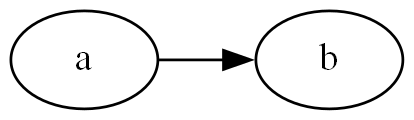

Module Connection
We offer here a tool to help creating a connection between multiple verilog modules.
Vmodgraph
We handle connections in between Vmodules using Vmodgraph objects.
julia> g = Vmodgraph();Vmodgraph is a callable object, and you may register connections between Vmodules to this object.
julia> a = Vmodule("a"); b = Vmodule("b");
julia> g(a => b);We also offer a method to convert Vmodgraph into a graph written in DOT language, and the connections can be visualized this way.
julia> dotgen(g; dpi=196) |> println;
digraph{
rankdir = LR;
dpi = 196;
a [shape=oval];
b [shape=oval];
a -> b;
}Using, for example, Graphviz, the graph below would be generated.

Connect Ports between Verilog Modules
The connection in the example above connected Vmodule a and b. However, there is no data transaction available between the modules. You may explicitly register name of ports to be connected between Vmodules. Here we construct new connection from Vmodule a to c.
julia> c = Vmodule("c");
julia> g(a => c, @pconnect dout => din);Here we declared the connection between a and c. Note that at this time the Vmodules do not contain ports declared here. You also need to add the ports to each Vmodule object.
julia> vpush!(a, @ports @out @logic 8 dout);
julia> vpush!(c, @ports @in 8 din);Generate List of Vmodule Objects
After adding logics and ports to each Vmodule, you may generate a list of Vmodules exported from Vmodgraph.
julia> vmods = layer2vmod!(g);
julia> println(typeof(vmods));
Vector{Vmodule}At the head of the exported list of Vmodules is the top level Vmodule which represents the whole Vmodgraph, and the rest are the modules which are instanciated inside the top module. You may call vfinalize.(vmods) to further conduct wire width inferences and wire declarations.
Port Lifting
Each Vmodule objects can have (verilog) ports that are not connected to other Vmodules. These ports are automatically added to the top level Vmodule when calling layer2vmod! and is accessible from outer verilog modules.